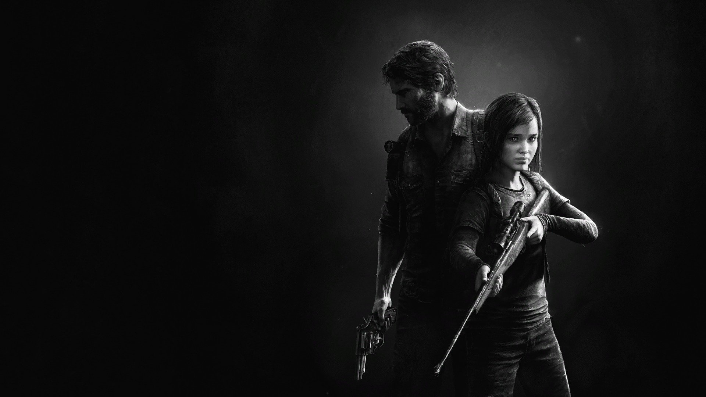
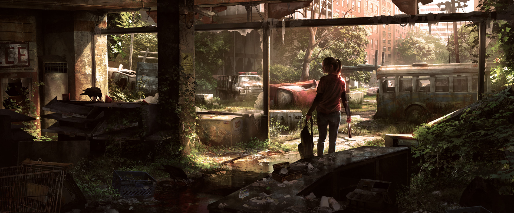
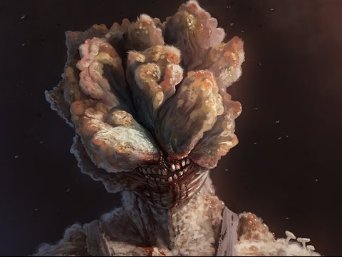

The Last of Us Review
This game offers so much for the time it was made, truly Naughty Dog made a masterclass of a game. Before going into my review I must say this is my favorite videogame of all time, storyline wise. Personally I think this game is a must for every gamer out there no matter whether you have PS4, XBOX, or PC. It is a must have experience intended for a gamer who loved to get totally immersed in the story, characters, and philosophies of the game.

The Premise
The Last of Us is set in a universe where a fungi called a cordycep, evolves from effecting insects into effecting humans. This creates a cool "what if" scenario as the background for the disease is based in reality. Also the disease in real life is terrifying in appearance, in the looks category the artsists and developers make every effort to make your skin crawl with fright and disgust. The "zombies" are very atypical and deliver a new and unique horror that replicate its effects on various insects. The story opens up right as the disease is being spread to the masses: introducing us to Joel and his daughter Sarah. After a quick exploration of the enviorment playing as Sarah, the opening scenes takes the player through the chaos and anarchy caused. This is set in Austin, Texas in the year 2033.

The Story
The story in The Last of Us is its strongest point. Without spoiling anything I am going to try and review it the best I can. This is a game with very strong characters that you learn to care for. The game takes the characters to many parts of the fungi ridden country. It also delivers a lot of emotional blows as you are a witness to a lot of violence, atrocities, and death of innocence. The pacing can use a little work in some areas but for the most part the story starts strong and gets a bit slow in the first 3 hours but eventually crescendos into a nailbiting climax that answers the story's questions and narrative. The characters are dymanic and grow as their trek progresses and the player really gets a feel for the true person behind who you control. Making bad situations all the more scary as you learn to love each character more and more. Even the writing, the little jokes, and character moments are done so well that the little things are enjoyable within the game. Overall the story in The Last of Us is top notch, and deserves to be explored in full.

The Gameplay
When it comes to gameplay, The Last of Us can show a bit of its age, but still uses a well thought out system that involves constant looting, a cool crafting system, that feeling of scarcity (depending on the difficulty) and moments of desperation. The Last of Us puts players in anxiety filled situations with and without Ellie, in the dark, in cramped areas, and other wondeful situations that fill players with pure terror. One of the most satisfying and relieving parts is finally overcoming these challenges andseeing the sunlight again. Never have I ever had such a big sigh of relief after spending 30 minutes underground in the dark killing monsters. When it comes to the zombies in this game there are multiple types. The normal ones who had recently been turned. The clickers who have been turned for a while and are basically a moving cespool of fungus that causes the head to split. The clickers depend on their hearing as they have no eyes and make a horrifying clicking sound to locate prey and make for much harder enemies. Next are the bloaters who are like clickers but much much bigger and stronger. They serve as the tanky type of monster and require dozens of body shots to peirce its thick armor or well placed headshots to take it down. Lastly there are other people which are just as dangerous as the monsters and can vary from melee enemies, to gunman, to armed guys with armor, to snipers. The gunplay is good enough and the best players can preserve precious ammo by getting headshots. There is the looting system that allows for the crafting of various tools like bombs, molitov cocktails, and bats with nails. This system also allows you to make your own healables with what you find. Lastly there is an upgrade system that allows for the upgrading of weapons and tools. Overall certain aspects of the gameplay are a dated, for the most part it holds up to this day and rewards the skillful and explorative players.

Conclusion
In conclusion this is a must play for every gamer. This explores the highs and lows of an adventure full of twists and turns. Taking the player from place to place across the destroyed US. With good gameplay, great storylines, and even better characters this is a 10/10 from me and shoulld be a highpoint in every gamer's collection of games.